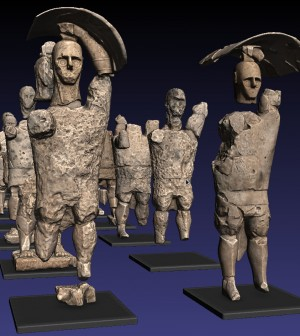

I giganti riemersi dalla terra possono riscrivere l’intera storia del Mediterraneo. Siamo a Cabras, nel cuore del Sinis, un tratto della provincia di Oristano ricco di paesaggi e tesori naturalistici e artistici: un territorio abitato dall’uomo sin dal Neolitico. E proprio a quel periodo risalgono “I giganti di Mont ‘e Prama”, straordinarie sculture rinvenute in frammenti tra la fine degli anni Settanta e l’inizio degli anni Ottanta; per caso, lavorando la terra, alcuni contadini consentirono uno dei ritrovamenti più importanti del millennio: le monumentali statue – che appaiono in posizione eretta e superano i 2 metri di altezza – rappresentano infatti la manifestazione di una civiltà che non ha uguali in tutto il bacino occidentale del Mediterraneo, proiettando una nuova luce sull’arte e la cultura delle popolazioni che allora abitavano la Sardegna. Si tratta di un insieme straordinario di frammenti statuari in pietra di epoca nuragica che raffigurano arcieri, guerrieri, pugilatori e modelli di nuraghe.
| Riprod. Virtuale | Museo di Cabras |
|---|---|
|  | |